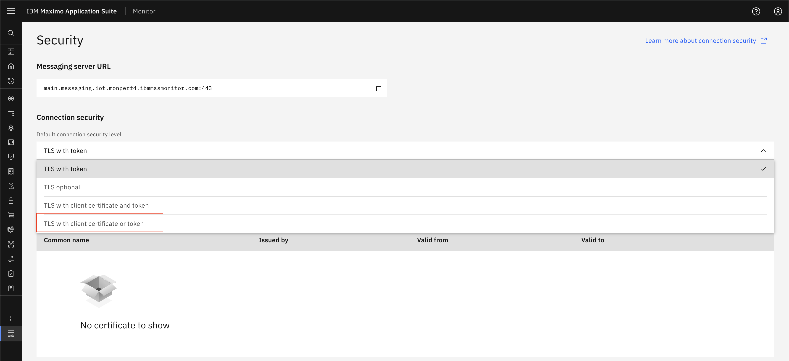
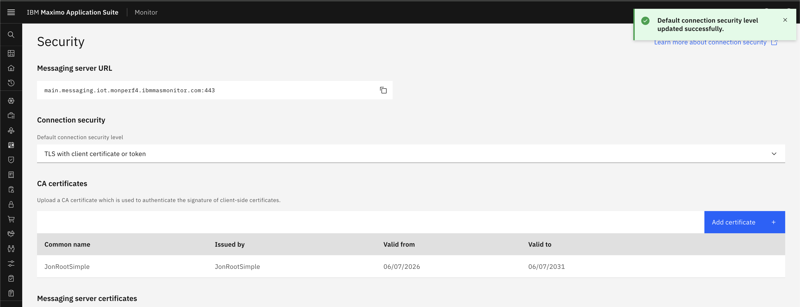
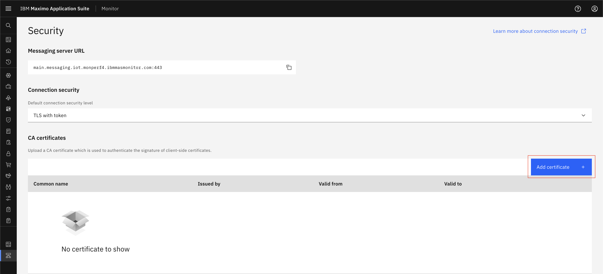
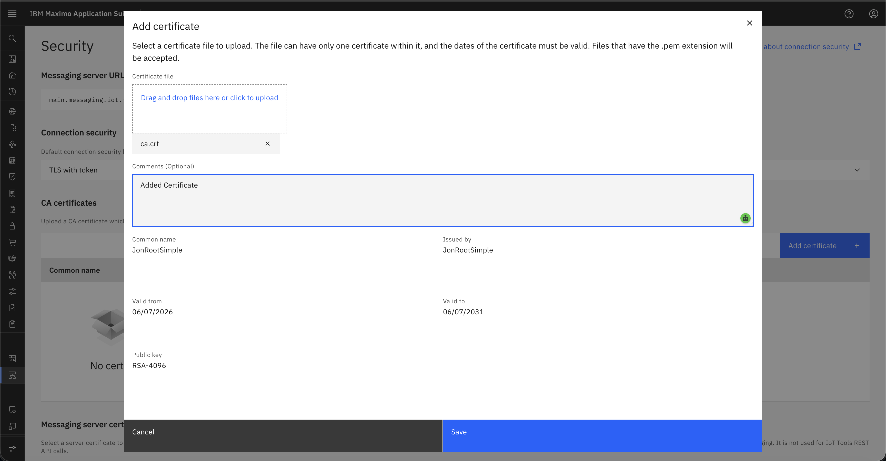

TLS With Client Certificate or Token
Prerequisites
Before starting this exercise, ensure you have:
- Access to Maximo Monitor
Configure Connection Security Level
- Open
Maximo Application Suiteand selectMonitor Application - Navigate to Setup > IoT Security

- Select TLS with Client Certificate or Token as the authentication method from dropdown

- Save the configuration

- If you are doing authentication using Certificate then Add Certificate Authority (CA) certificate if using certificates
-
Generate CA and client certificate and keys. 6.1.
mkdir -p ~/work/mas/ca/simple6.2.cd ~/work/mas/ca/simple6.3.openssl genrsa -out ca.key 40966.4.openssl req -new -x509 -sha256 -days 1826 -key ca.key -out ca.crt -subj "/C=UK/ST=Hampshire/L=Winchester/O=JonTmp/CN=JonRootSimple"6.5.openssl genrsa -out jonkafkatest1.key 40966.6.openssl req -new -key jonkafkatest1.key -out jonkafkatest1.csr -sha256 -subj "/C=UK/ST=Hampshire/L=Winchester/O=JonTmp/CN=d:<deviceType>:<deviceId>"6.7.openssl x509 -req -in jonkafkatest1.csr -CA ca.crt -CAkey ca.key -out jonkafkatest1.crt -days 825 -sha256 -
Add CA Certificate to the system

- Provide details for CA Certificate and also you can view certificate details.

- Click on Save button.
- Now you can create a DeviceType (Steps to create DeviceType) and devices (Steps to create Device).
- New device has username and password(token) is generated. Keep those username and password for future use.
- Or you can generate certificates for device and devicetype and add CA certificate in the system and keep client certificate and key for further device authentication.
- Add metric and event on device type (Steps to add metric).
- Now you can use Swagger UI (Selecy
API Docs Menuand selectHTTP Messaging APIclick onView APIs) or any messaging tool like MQTTX to test device authentication using username and password. - User needs to provide either username and password or certificate and key for device authentication.
- Provide parameters and topic for device and send data.
-
Once you send data, Verify data should be shown in device recent event and data table.
Device Recent

Device Data Table

Best Practices
Recommendations
- Prioritize certificates for new device deployments
- Document which devices use which authentication method
Related Topics: - TLS With Token - TLS With Client Certificate and Token